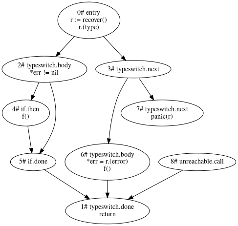

原文：Billion-Dollar Mistake in Go ?
地址：https://hackernoon.com/billion-dollar-mistake-in-go-ll1s3tkc
作者：Harri Lainio（@lainio）
翻译：Jayce Chant（博客：jaycechant.info，公众号ID： jayceio）
十亿美元（billion dollar）的错误 / bug 貌似是美国的一个梗，大概的意思是，对于那些市值上几千亿的大企业，如果一个错误能够导致市值下跌个百分之零点几，就已经是十亿左右了。
在计算机领域，最著名的 BDM 大概是 图灵奖得主Tony Hoare 说他在 1965 年发明的 null 引用。
但我不确定这是不是最早的出处，毕竟在商业领域这样的说法也很常见。
以下为译文：

以下示例代码来自 Go 的 标准库文档：
|
|
代码看起来没什么问题。出自标准库官方文档的代码，肯定不会错，对吧。
在阅读介绍 Read 函数的 io.Reader 文档 之前，我们先花几秒钟来弄清楚这里面有什么问题。
例子里的 if 语句（至少）应该这样写：
|
|
你也许在想，我是不是在自欺欺人：我们不是应该查看 File.Read 函数的 文档 吗？那个才是正确的文档吧？是的，但那不应该是唯一正确的文档。
译者注：读到这里的朋友可能会云里雾里，又未必愿意 / 方便（特别是公众号不能外链）看完文档再回来。我简单介绍一下。
在
io.Reader接口的文档里，当Read遇到文件结束时，io.EOF可能跟着非 0 的 n （读取的有效字节数）一起返回，也可能在下次调用跟 n = 0 一起返回。（这部分文档很长，有 1300 多个单词，还介绍了Read方法其它可能的行为，但多数是建议而不是强制的口吻。）
File.Read的文档则只有一句话，非常明确地指出遇到文件结尾时，会返回0, io.EOF。（换言之，io.EOF不会跟有效字节一起返回。）
如果我们不能真的用接口隐藏实现细节，那接口有什么用处？一个接口应该规定（set）它的语义，而不是像 File.Read 那样规定它的实现者。当接口的实现者是 File 以外的其他东西，但仍是一个 io.Reader 时，上面的代码会发生什么？当它把数据和 io.EOF 一起返回时，它退出得太早了，但这对所有的 io.Reader 实现者都是允许的。
接口（Interface） vs 实现者（Implementer）
在 Go 里面，你不需要显式标记接口的实现者。这是一个强大的特性。但这是否意味着我们总是应该根据静态类型来使用接口语义呢？例如，下面的 Copy 函数是否应该使用 io.Reader 的语义？
|
|
那这个版本是不是应该只使用 os.File 的语义呢？(注意，这些只是虚构的例子)
|
|
实践中认为，总是应该使用接口语义，而不是绑定到具体的实现——这就是有名的 松耦合。
io.Reader 的问题
这个接口有以下问题：
- 如果不学习
io.Reader的文档，你就不能安全地使用任何Read函数的实现。 - 如果不仔细研究
io.Reader的文档，你就无法实现Read函数。 - 由于缺少对错误（error）的分类（distinction），接口不够直观、完整和符合习惯。
正因为 io.Reader 是一个接口，前面提到的问题才多了起来。这给 io.Reader 的每个实现者 和 Read 函数的每个调用者之间带来了跨包依赖。
标准库本身就有很多其它 io.Reader 的调用者误用（misuse）该接口的例子。
根据这个 问题单（issue），标准库——尤其是里面的测试——都坚持使用 if err != nil 这个写法，这就阻止了 Read 实现中的优化。
例如，当检测到 io.EOF 时，如果（连同剩余的数据）立即返回 io.EOF ，就会让一部分调用者无法正确运行。原因是显而易见的。reader 接口文档允许两种不同类型的实现：
Read在成功读取 n > 0 个字节后，如果遇到错误或文件结束的情形，它会返回读取的字节数。它可能会在同一个调用中返回（非 nil）错误，也可能会在后续调用中返回错误（同时 n = 0）。
接口应该是直观的、并且是通过编程语言本身正式地定义的，使得你无法实现或者误用它们（cannot implement or misuse them）。开发者不应该需要先阅读文档才能进行必要的错误传递。
译者注：这里的 ‘cannot implement’ 感觉意思不对，不知道原作者是不是想表达错误实现的意思，却只在 use 上加了 mis，忘了 implement。个人猜测本意是 ‘cannot implement or use them in a wrong way’ ，不能错误地实现或者使用它们。但这只是我个人的猜测，写在这里，译文还是忠实于原文。
允许接口函数有多个（本例中是两个）不同的显式行为是有问题的。接口的思想，是隐藏实现细节，实现松散耦合。
最明显的问题是，io.Reader 接口既不直观，也不符合 Go 典型的错误处理惯例。它还打乱了程序推导中正常和错误分离的控制路径。这个接口使用错误传递机制来处理一些实际上不是错误的东西：
EOF是Read没有更多输入时返回的错误。函数应该只返回EOF来表示输入的正常（grateful）结束。如果EOF在结构化数据流中意外发生，相应的错误应该是ErrUnexpectedEOF或其他能给出更多细节的错误。
作为可辨识联合（Discriminated Unions）的错误
io.Reader 接口和 io.EOF 指出了 Go 目前的错误处理中所缺少的东西，那就是 错误的分类（the error distinction）。例如，Swift 和 Rust 不允许部分失败。函数调用要么成功，要么失败。这就是 Go 的错误返回值的问题之一。编译器无法提供任何支持。众所周知，这同样也是 C 语言的非标准错误返回的问题——当你有一个重叠的错误返回通道时就会这样。
Herb Shutter（译者注：C++ 程序设计专家，曾担任 ISO C++ 的秘书和会议召集人，原文有笔误，应为 Sutter）特意在他的 C++ 提案《零开销的确定性异常：抛出值（Zero-overhead deterministic exceptions: Throwing values）》中提到：
『正常』与 『错误』（控制流）是一个非常基础的语义区分，而且可能在任何编程语言中都是最重要的区分，尽管这一点总是被低估。
解决办法
Go 当前 io.Reader 接口存在问题，是因为违反了语义的区分。
增加语义上的区别
首先，我们通过声明一个新的接口函数，停止使用返回错误来处理不是错误的东西。
|
|
只允许明显的行为
其次，为了 避免混淆 以及 阻止明确的错误，我们引导使用下面的助手包装器（helper wrapper）来处理这两种允许的 EOF 行为。包装器只提供了一个显式行为来处理数据的结束。因为文档中说，必须允许在没有任何错误（包括 EOF）的情况下返回零字节（不鼓励在无错误的情况下返回零字节），所以我们不能将读取的零字节作为 EOF 的标志。当然，包装器也保持了错误的区分。
|
|
我们做了一个错误区分规则，错误和成功的结果是排他的。我们也对返回值 left 进行了区分。当我们已经读取了所有的数据，我们会将其设置为 false，使得函数变得更加易用，这在下面的 for 循环中可以看到：只有在 left 设为 true ，即数据可用时，才需要处理传入的数据。
|
|
正如示例代码所示，它允许将正常路径（happy path）和错误控制流分开，这使得程序推导变得更加容易。我们在这里展示的解决方案并不完美，因为 Go 的多个返回值之间并无区别。
在我们这里，它们都应该是这样的。无论如何，我们已经了解到，每个新人（包括刚接触 Go 的人）都可以在没有文档或示例代码的情况下使用我们新的 Read 函数。这就是一个很好的例子，说明 正常路径和错误路径的语义区分是多么重要。
结论
我们可以说 io.EOF 是一个错误吗？我想说是的。这里有一个错误应该与预期的返回（expected returns）区分开的完美的理由。我们应该始终构建 鼓励正确路径（praise happy path）和 防止错误 的算法。
Go 的错误处理实践还缺少语言特性来帮助语义的区分。幸运的是，我们大多数人已经在清楚区分的控制流中处理错误。